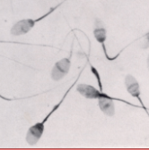
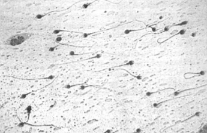

When investigators arrive at the scene of a sex-related crime, the victim is taken to a hospital for an extensive physical examination by a physician and nurse with specialized training. During this examination, physical injuries upon the victim’s body are identified and a search for semen from the culprit is conducted. If the victim is a female a swab of the vulva (external genitalia), vagina (internal genitalia), pubic hair region, and rectum for traces of semen are done.
When a male suspect commits a sexual assault it should not be assumed that the victim is always a female. Sexual assaults are sometimes committed against males as well. If the victim is male then a swab of his rectum for traces of semen is done. However, male sexual assault victims rarely report this type of crime.
There are other places that investigators will also check for semen evidence other than inside the victim’s body - such as the victim’s clothing and at the crime scene itself. If the suspect attempted to clean up after the assault any towels or clothing in the vicinity of the crime may be taken as evidence.
After body fluid evidence that is suspected to be semen is collected it must be confirmed that the fluid is semen. Two tests that can be done to confirm that a substance is semen include:
Microscopic Analysis: Visual analysis of the suspected fluid under the microscope. Sperm cells are very unique in appearance as they are the only human body cells that have a long flagella or tail. Therefore, an investigator may simply confirm that the suspected substance is semen by looking for such cells. Sperm cells are very small though, so a magnification of 100x or higher is needed.

‘Fast Blue B’ test: A special protein called acid phosphatase is found only in secretions from the prostate gland. When a chemical called ‘Fast Blue B’ is combined with acid phosphatase it will change from a blue to a deep purple color. If it does not turn a deep purple color then the substance being tested is not semen. A drawback to this test is that it also turns a deep purple color when it is exposed to fungi and some fruit and vegetable juices. However, a trained forensic expert knows that unlike other substances semen reacts in 30 seconds or less.
In addition, a test using MUP (4-methyl umbelliferyl phosphate) can be used as MUP will fluoresce (glow) under UV light when it comes into contact with acid phosphatase. This test is similar to using Luminol to detect blood. This test can be used to search large areas such as bedsheets and carpets for seminal stains.